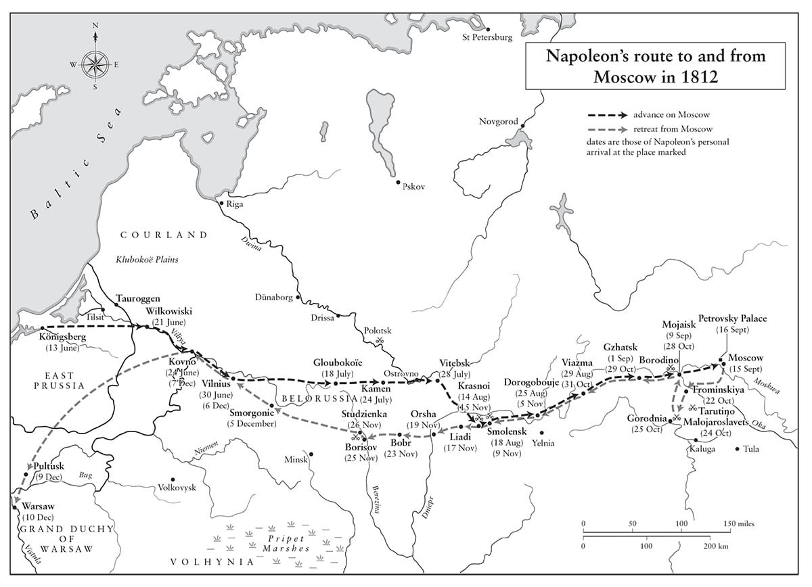
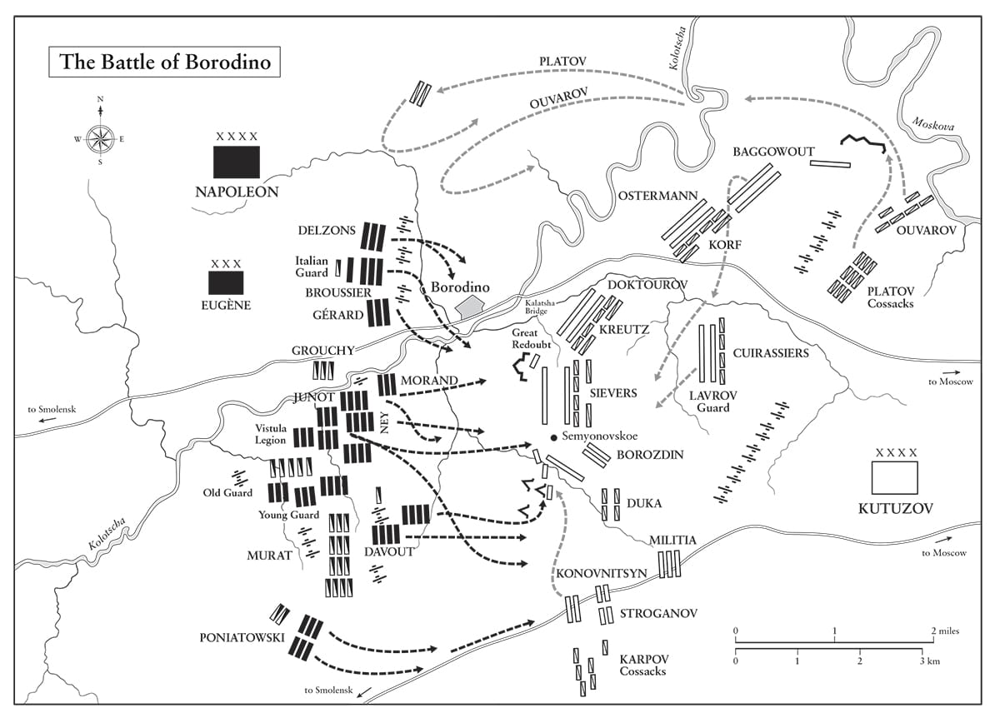

Hoàng đế đã không muốn chinh phục Nga, thậm chí không muốn tái lập Ba Lan; ông đã chỉ từ bỏ mối liên minh với Nga một cách đầy nuối tiếc. Nhưng chinh phục một thủ đô, ký một hiệp định hòa bình theo điều khoản của ông và khép chặt các hải cảng Nga với thương mại Anh, đó là mục tiêu của ông.
• Hồi ký của Champagny
Nguyên tắc đầu tiên trên trang một của cuốn sách về chiến tranh là: ‘Không tiến quân về Moscow’.
• Thống chế-Tử tước Montgomery, Thượng viện Anh, tháng Năm năm 1962
⚝ ✽ ⚝
Napoleon vượt sông Niemen lúc 5 giờ sáng 24 tháng Sáu năm 1812, và sau đó đứng trên một quả đồi nhỏ gần đó trong khi binh lính của ông hành quân qua và hô vang, “Hoàng đế muôn năm!” Ông ngân nga một mình bài hát thiếu nhi “Malbrough s’en va-t’en guerre” (Malbrough lên đường ra trận). (Malbrough đang ra trận, ai biết được anh ấy sẽ trở về?) Hôm đó ông mặc một bộ quân phục Ba Lan, và cưỡi một con ngựa có cái tên mang tính biểu tượng không kém, Friedland. Chiều cùng ngày, ông tiếp tục vượt sông Viliya và tiến vào Kovno. Cần năm ngày để toàn bộ đạo quân qua hết sông.
Cho dù Nga có 650.000 quân vào năm 1812, nhưng lực lượng này bị trải ra rất rộng trên lãnh thổ Đế chế – ở Moldavia, Caucasus, Trung Á, Crimea, Siberia, Phần Lan, và những nơi khác – chỉ có khoảng 250.000 quân được tổ chức thành ba Đạo quân đối mặt với Napoleon ở phía tây. Đạo quân miền Tây Thứ nhất của Barclay de Tolly gồm 129.000 quân, được triển khai rộng về hai phía Vilnius; Đạo quân miền Tây Thứ hai của Bagration gồm 48.000 quân bố trí cách Vilnius 160 km về phía nam tại Volkovysk; và Đạo quân miền Tây Thứ ba của Tướng Alexander Tormasov gồm 43.000 quân tới từ xa hơn về phía nam, sau khi được giải phóng khỏi nhiệm vụ ở vùng Danube nhờ hòa ước Nga-Thổ. Napoleon muốn giữ ba đạo quân này tách rời nhau và đánh bại từng đạo quân một. Ông phái Eugène và Jérôme thực hiện những cuộc hành quân hợp vây rộng với hy vọng bao vây Đạo quân Thứ hai của Bagration trước khi nó kịp hội quân với Đạo quân Thứ nhất của Barclay. Tại sao ông lại chọn giao trọng trách then chốt này cho con riêng vợ cũ và em trai thay vì những quân nhân cao cấp, giàu kinh nghiệm như Davout, Murat hay Macdonald thì không rõ. Jérôme đã chỉ huy Quân đoàn 9 trong chiến dịch 1806-1807 (lực lượng người Đức của đạo quân) nhưng đã không thực sự nổi bật. “Cái nóng thật dữ dội”, Napoleon viết cho Marie Louise từ tu viện ở Kovno, nơi ông đặt bản doanh của mình, nói thêm: “Em có thể tặng trường đại học một bộ sưu tập sách và tranh khắc. Điều này sẽ làm trường cảm kích và sẽ nâng giá trị của em lên. Anh có rất nhiều sách và tranh.”
Quan điểm trong Bộ Tư lệnh Nga bị chia rẽ giữa một phe là các tướng lĩnh quý tộc ủng hộ chiến lược phản công của Bagration, và một phe là “những người nước ngoài” (thường là người Đức vùng Baltic) ủng hộ chiến lược rút lui của Barclay de Tolly, về căn bản là chiến lược của Bennigsen năm 1807 ngoại trừ việc được triển khai trên một khu vực rộng hơn nhiều. Vào lúc Napoleon vượt sông Niemen, phe thứ hai đã thắng thế, một phần vì bản thân quy mô Đại quân khiến cho không thể nghĩ tới một cuộc phản công. Điều đó thật nghịch lý, vì việc có một đạo quân nhỏ hơn lẽ ra đã giúp cho Napoleon thu hút được người Nga vào trận quyết chiến sớm mà ông cần đánh vì lý do hậu cần, và cũng lẽ ra đã cho phép ông (vì cần ít nhu cầu tiếp tế hơn) có nhiều thời gian hơn để đánh trận đó.

Nếu như Alexander cử Bagration, một người sinh ra tại Nga, làm Bộ trưởng Chiến tranh và Tư lệnh Đạo quân miền Tây Thứ nhất thay vì Barclay – một sự bổ nhiệm hẳn sẽ rất được ủng hộ trong hàng ngũ sĩ quan Nga – Napoleon có thể đã tiêu diệt quân đội Nga tại Vilnius hay thậm chí còn trước cả nơi đó. Tuy nhiên, ông ta đã lựa chọn Barclay, một người ít bốc đồng và sắc sảo hơn, và bám lấy kế hoạch của Barclay nhằm nhử Đại quân tiến sâu vào lãnh thổ Nga, kéo dài các tuyến đường tiếp tế xa khỏi các tổng kho hậu cần quân sự lớn ở Mainz, Danzig, Königsberg, và những nơi khác.
Napoleon tiến vào Vilnius thủ phủ vùng Lithuania thuộc Ba Lan ngày 28 tháng Sáu, và biến nơi này thành một tổng kho hậu cần khổng lồ, khi người Nga đã di chuyển hoặc đốt hết kho tàng của họ trước lúc rút lui. Ông viết cho Marie Louise rằng ông đã chọn đặt bản doanh của mình tại “một ngôi nhà khá đẹp nơi Hoàng đế Alexander từng ở vài ngày trước, hoàn toàn không nghĩ là mình có thể bước vào đây sớm đến thế”. Nửa tiếng trước khi Napoleon tiến vào thành phố, ông ra lệnh cho một sĩ quan pháo binh Ba Lan thuộc ban tham mưu của mình là Bá tước Roman Soltyk, triệu tập Jan Sniadecki, nhà thiên văn học, toán học và vật lý học danh tiếng, Hiệu trưởng trường Đại học Vilnius, tới đó trò chuyện với ông. Khi Sniadecki nhất quyết muốn đi tất lụa trước khi rời khỏi nhà mình, Soltyk thân ái nhắc nhở: “Ông hiệu trưởng, không quan trọng đâu. Hoàng đế không quan tâm tới mấy thứ bề ngoài chỉ gây ấn tượng với những người thường… Đi thôi.”
Cuộc tiến quân vào thành phố của chúng tôi đầy đắc thắng”, một sĩ quan Ba Lan khác nói. “Các đường phố… đông nghịt người, mọi cửa sổ đều ken chật các quý bà quý cô bày tỏ sự cuồng nhiệt mãnh liệt nhất”. Napoleon thể hiện sự nhạy bén đặc trưng về quan hệ công chúng bằng cách tự mình đi trước và các đơn vị Ba Lan theo sau trong tiến trình. Ông thiết lập một chính quyền lâm thời cho người Lithuania gốc Ba Lan tại đó, và Lithuania được tái hợp mang tính nghi lễ với Ba Lan trong một buổi lễ tại nhà thờ lớn Vilnius. Tại Grodno, quân Pháp được đón chào bằng những đám rước với ảnh thánh, nến và ban đồng ca cầu phước lành cho họ vì đã “giải phóng” họ khỏi sự cai trị của Nga.(*) Một bản Te Deum được hát ở Minsk, nơi Tướng Grouchy cho truyền tay chiếc khay quyên góp, nhưng ngay khi người dân nông thôn nghe nói quân Pháp trưng thu lương thực như thường làm trong chiến dịch, họ liền lùa gia súc vào giấu trong rừng. “Người Pháp tới để tháo bỏ xiềng xích của chúng ta”, nông dân Ba Lan ở miền Tây Nga nói vào mùa hè đó, “nhưng họ cũng tháo nốt cả ủng của chúng ta.
“Ta yêu dân tộc của các vị”, Napoleon nói với các đại diện của cộng đồng Ba Lan tại Vilnius. “Trong 16 năm qua ta đã chứng kiến những người lính của các vị bên cạnh ta trong các trận đánh ở Italy và Tây Ban Nha”. Ông dành cho Ba Lan “sự trân trọng và bảo vệ của ta”. Tuy nhiên, với Schwarzenberg đang bảo vệ sườn nam cho mình, ông cần nói thêm: “Ta đã đảm bảo với Áo sự toàn vẹn lãnh thổ của họ, và ta không thể cho phép bất cứ điều gì có xu hướng gây rắc rối cho quốc gia này trong việc sở hữu hòa bình những quận Ba Lan còn lại của họ”. Ông đang phải thực hiện một động thái cân bằng hết sức tế nhị.
Ông nán lại 10 ngày ở Vilnius để cho phép phần lớn đạo quân được nghỉ ngơi, tái tổ chức và cho phép cánh phải của đạo quân, dưới sự chỉ huy của Jérôme chưa được thử thách hay kiểm chứng – gồm hai trong các sư đoàn của Davout, lực lượng Áo của Schwarzenberg, lực lượng Ba Lan của Poniatowski và lực lượng Saxony của Reynier, tất cả 80.000 người – tiến về phía hạ lưu sông Berezina và tìm cách khép gọng kìm bao vây đạo quân của Bagration. Tiền quân tiến tới và đến ngày 29 tháng Sáu, cái nóng như nung đã vỡ òa trong một cơn dông kèm mưa đá dữ dội và những trận mưa như trút nước, sau đó Trung sĩ Jean-Roch Coignet thuộc Cận vệ Đế chế nhận thấy “trong doanh trại kỵ binh gần đó, mặt đất la liệt xác ngựa chết vì lạnh”, có cả ba con ngựa của chính anh ta. Trận mưa cũng làm mặt đất lầy lội và các con đường ngập trong bùn, gây ra những khó khăn về tiếp tế và khiến tiền quân chậm lại trong cuộc truy kích quân Nga. Ở một số đầm lầy và vũng ngập, binh lính phải lội trong bùn nước ngập tới tận cằm.
Berthier viết cho Jérôme từ Vilnius vào các ngày 26, 29 và 30 tháng Sáu, hối thúc ông này bám sát Bagration và chiếm Minsk. “Nếu Jérôme tiến mạnh về phía trước”, Napoleon nói với Fain, “Bagration sẽ gặp khó khăn lớn”. Với Jérôme tiến sâu vào từ phía tây và Davout từ phía bắc, Bagration đáng lẽ đã bị nghiền nát giữa họ tại Bobruisk, song năng lực chỉ huy tồi của Jérôme, cùng với sự khéo léo của Bagration khi rút lui, đã đồng nghĩa với việc Đạo quân Thứ hai của Nga thoát được. Đến ngày 13 tháng Bảy, có thể thấy rõ Jérôme đã thất bại. “Nếu có sự hành động mau lẹ hơn và phối hợp tốt hơn giữa các quân đoàn của đạo quân”, Tướng Dumas, quản lý tài chính của đạo quân, sau này phát biểu, “mục tiêu đã có thể đạt được và thành công của chiến dịch được định đoạt ngay từ lúc mới mở màn”. Khi Napoleon biết tin về thất bại, ông đã chỉ định Davout chỉ huy cánh quân của Jérôme. Cậu em trai của ông từ chức đầy phẫn nộ và chuồn thẳng về Westphalia khi chiến dịch mới bắt đầu được ba tuần.
“Thời tiết mưa rất nhiều”, Napoleon viết cho Marie Louise từ Vilnius ngày 1 tháng Bảy, “những cơn mưa ở vùng này thật khủng khiếp”. Cho dù chúng ta không có những lá thư của cô gửi cho ông, nhưng trong tháng đó Hoàng hậu cứ cách một ngày lại viết cho ông ta một thư. “Chúa ban phước để con sớm gặp lại Hoàng đế”, cô nói với cha vào thời gian này, “vì cuộc chia ly này đang đè quá nặng lên con”. Ngoài việc nhắc tới tình trạng sức khỏe của mình – gần như luôn luôn tích cực – Napoleon hỏi thăm về con trai trong tất cả các lá thư ông viết, mong muốn được biết tin về việc “liệu nó đã bắt đầu nói chưa, liệu nó đã đi được chưa”, v.v…
•••
Ngày 1 tháng Bảy, Napoleon tiếp sĩ quan phụ tá của Alexander, Tướng Alexander Balashov, người nói với ông có phần muộn màng rằng Napoleon vẫn có thể rút lui khỏi Nga và tránh chiến tranh. Ông viết cho Alexander một lá thư rất dài, nhắc Sa hoàng về những nhận xét chống Anh của ông ta ở Tilsit, và chỉ ra rằng tại Erfurt ông đã chiều theo các mong muốn của Alexander về Moldavia, Wallachia, và sông Danube. Từ năm 1810, ông viết, Sa hoàng đã “tái vũ trang trên quy mô lớn, bác bỏ con đường thương lượng” và đòi hỏi những điều chỉnh trong việc xác lập lãnh thổ ở châu Âu. Ông nhắc lại “sự trân trọng cá nhân mà đôi lúc ngài đã dành cho ta” song nói rằng tối hậu thư ngày 8 tháng Tư về việc rút khỏi Đức đã được soạn thảo “một cách rõ ràng để đặt ta giữa chiến tranh và mất danh dự”. Cho dù “trong 18 tháng qua ngài đã từ chối giải thích về bất cứ điều gì”, Napoleon viết, “nhưng tai ta luôn mở rộng với việc thương lượng hòa bình… ngài sẽ luôn tìm thấy ở ta những cảm xúc và tình bạn chân thành tương tự như trước”. Ông quy trách nhiệm để xảy ra chiến tranh cho những cố vấn tồi của Sa hoàng và sự ngạo mạn của Kurakin, sử dụng một câu ông đã dùng khi viết thư cho Giáo hoàng, Hoàng đế Áo, và những người khác trong quá khứ: “Ta thương hại sự xấu xa của những kẻ đã khuyên Hoàng thượng những lời tai hại như thế”. Sau đó Napoleon lập luận rằng nếu ông không phải đánh nhau với Áo năm 1809, thì “vấn đề Tây Ban Nha chắc đã kết thúc năm 1811, và khả năng hòa bình đã được thương thảo với Anh vào thời điểm đó”. Để kết luận, Napoleon đề xuất:
⚝ ✽ ⚝
Ông kết thúc lá thư bằng việc nhắc lại rằng, bất chấp cuộc chiến tranh giữa họ, “những cảm xúc cá nhân ta dành cho ngài không mảy may bị ảnh hưởng bởi những biến cố này… [ta vẫn] đầy thiện cảm và sự trân trọng dành cho những phẩm chất cao thượng tinh tế của ngài và mong mỏi được chứng tỏ điều đó với ngài”.(*)
Alexander không đón nhận bất cứ điều gì trong các đề xuất của Napoleon. Người Nga không ngừng rút lui trước Đại quân – cuộc giao chiến đầu tiên làm mỗi bên có hơn 1.000 thương vong chỉ tới sau bốn tuần – nhưng điều đó không có nghĩa là họ không kháng cự. Nhận ra cuộc chiến tranh này sẽ là cuộc đọ sức về hậu cần cũng nhiều như về giao chiến, họ tiêu hủy một cách có hệ thống mọi thứ không thể di chuyển được. Mùa màng, cối xay gió, cầu, gia súc, kho tàng, cỏ khô, nhà cửa, lương thực – bất kỳ cái gì có thể hữu dụng cho quân Pháp sắp tới nơi đều bị mang đi hoặc đốt trụi, trong phạm vi nhiều cây số ở cả hai bên đường. Napoleon đã làm điều tương tự trên đường rút lui từ Acre, và đã ngưỡng mộ khả năng của Wellington thực thi một chính sách tiêu thổ tương tự trong khi rút lui tới các phòng tuyến ở Torres Vedras, vì như Chaptal ghi lại: “Ông ấy đánh giá năng lực của các tướng lĩnh dựa vào những đặc tính như vậy.”
Vì miền Đông Ba Lan và Byelorussia là những vùng rất nghèo khó, dân cư thưa thớt, nạn suy dinh dưỡng phổ biến thậm chí cả vào thời bình – không giống như vùng đất phì nhiêu xanh tốt ở Bắc Italy và Áo – nên sẽ luôn gặp vấn đề nghiêm trọng về hậu cần khi nền kinh tế nông nghiệp lạc hậu của nó đột nhiên phải nuôi thêm hàng trăm nghìn miệng ăn nữa. Song với nhiều ngôi làng còn lại bị quân Nga đốt trụi trên đường rút lui, tình hình nhanh chóng trở nên tồi tệ. Tệ hơn, có những chi đội khinh kỵ của Nga hoạt động sâu phía sau chiến tuyến Pháp, bao gồm một đơn vị đặc biệt táo bạo do Alexander Chernyshev chỉ huy, đe dọa những tuyến đường liên lạc liên tục kéo dài của Napoleon.
Thời tiết vô cùng ẩm ướt vào cuối tháng Sáu vừa chấm dứt thì lập tức ánh nắng thiêu đốt quay trở lại; nước sạch thiếu thốn, nhiều lính mới tuyển mộ ngất xỉu vì kiệt sức. Hơi nóng làm bốc lên một thứ bụi ngột ngạt dày đặc tới mức phải bố trí lính đánh trống đi đầu các tiểu đoàn để những người hành quân phía sau không bị lạc. Đến ngày 5 tháng Bảy, vì các xe vận tải bị ùn lại ở những cầu phao qua sông, nên Đại quân phải đối mặt với chuyện thiếu lương thực trầm trọng. “Khó khăn về lương thực vẫn còn đó”, Boniface de Castellane sĩ quan phụ tá của Bá tước de Lobau ghi nhận, “binh lính không có lương thực và ngựa không có yến mạch”. Khi Mortier nói với Napoleon rằng một số lính của Cận vệ Trẻ quả thực đã chết vì đói, Hoàng đế nói: “Không thể nào! 20 ngày khẩu phần của họ đâu? Những người lính được chỉ huy tốt không bao giờ chết vì đói!” Chỉ huy của họ được triệu tới, và nói, “có thể do hèn nhát hay do mập mờ”, rằng trên thực tế những binh lính đó chết vì ngộ độc; trước câu trả lời này Napoleon kết luận, “Một chiến thắng lớn sẽ bù lại tất cả!”
Trung bình có 1.000 con ngựa chết mỗi ngày trong 175 ngày Đại quân có mặt tại Nga. Ségur nhớ lại rằng hơn 10.000 con ngựa đã chết vì mất nước và kiệt sức do nóng, trong khi lúa mạch đen chưa chín là thức ăn duy nhất của chúng, “bốc ra một thứ mùi không thở nổi”. Caulaincourt Chánh giám mã của Napoleon bàng hoàng. “Sự gấp gáp của các cuộc hành quân bắt buộc, việc thiếu yên cương và phụ tùng thay thế cho xe, sự khan hiếm thức ăn, thiếu chăm sóc, tất cả góp phần giết chết lũ ngựa”, ông ta ghi lại.
⚝ ✽ ⚝
Ngay từ ngày 8 tháng Bảy, Napoleon đã phải viết cho Clarke ở Paris để nói rằng không cần phải tăng cường mộ lính cho kỵ binh “vì chúng ta đang mất quá nhiều ngựa tại đất nước này, đến mức chúng ta sẽ gặp nhiều khó khăn, phải sử dụng mọi nguồn lực của Pháp và Đức để giữ cho số lính hiện tại của các trung đoàn có ngựa cưỡi.”
Cùng ngày, Napoleon nhận thấy rằng chủ lực quân Nga, Đạo quân miền Tây Thứ nhất, đang ở Drissa là một pháo đài kiên cố có vị trí rất tồi về mặt chiến lược. Đầy hy vọng, ông phái tiền quân của mình tới đó, song khi tới nơi vào ngày 17 họ thấy nó đã bị bỏ trống. Ngày 16 tháng Bảy ông được cho biết, dù Davout đã chiếm Minsk nhưng Bagration một lần nữa lại thoát được. Ngày trước khi rời khỏi Vilnius, Napoleon ăn tối với Tướng de Jomini; họ nói về việc ở gần Moscow tới mức nào – thực ra nó cách 800 km – và Jomini hỏi liệu ông có định hành quân tới đó không. Napoleon bật cười, nói rằng:
⚝ ✽ ⚝
Jomini đồng ý.
•••
Khi đó Napoleon đang phải đối mặt với một mối đe dọa khủng khiếp mới mà không đạo quân nào thời đó được chuẩn bị để đối phó. Sốt chấy rận là một căn bệnh do mất vệ sinh gây ra; Tác nhân gây bệnh, Rickettsia prowazekii , là dòng nằm giữa các loài vi khuẩn tương đối lớn gây bệnh giang mai, bệnh lao và những loại siêu vi gây bệnh đậu mùa, bệnh sởi. Nó có trong chấy rận vốn nhung nhúc trên các cơ thể người không được tắm rửa, trong các nếp quần áo bẩn, nó không lây qua vết cắn của chấy rận ký sinh mà qua chất thải và xác của chúng. Căn bệnh này đã biến thành dịch ở Ba Lan và miền Tây Nga trong nhiều năm.
Cái nóng, thiếu nước tắm rửa, binh lính chen chúc nhau nằm ngủ với số lượng lớn vào ban đêm, những túp lều nơi họ ngủ, việc gãi những chỗ bị ngứa trên cơ thể, không thay quần áo – tất cả đều là các điều kiện lý tưởng để bệnh sốt chấy rận lan truyền. Chỉ trong tuần đầu tiên của chiến dịch, 6.000 người đã bị ốm vì chứng bệnh này mỗi ngày. Đến tuần thứ ba của tháng Bảy, trên 80.000 người đã chết hoặc đang ốm, trong đó có ít nhất 50.000 vì sốt chấy rận. Trong vòng một tháng kể từ khi cuộc tấn công bắt đầu, Napoleon đã mất một phần năm quân số cụm Đạo quân trung tâm của mình. Larrey bác sĩ phẫu thuật trưởng của Đại quân là một bác sĩ giỏi, nhưng bệnh sốt này vẫn chưa được phát hiện về mặt y học là có liên quan với chấy rận, vốn thời đó chỉ bị coi là một loài ký sinh phiền toái nhưng không gây chết người, nên ông ta bối rối chẳng biết đối phó ra sao. Tiêu chảy và sốt viêm ruột được điều trị tại các bệnh viện ở Danzig, Königsberg và Thorn, song sốt chấy rận lại khác. Napoleon ủng hộ việc chủng ngừa, nhất là để phòng đậu mùa – ông đã cho con trai chủng ngừa lúc hai tháng tuổi – song chưa có cách chủng ngừa nào chống lại sốt chấy rận. Nghiên cứu gần đây trên DNA được lấy từ răng của gần 2.000 hài cốt trong mộ tập thể ở Vilnius cho thấy gần như tất cả chúng đều mang mầm bệnh typhus exanthematicus (sốt chấy rận), được biết đến như “dịch bệnh chiến tranh”. Thật ngược đời, Napoleon đã nhất quyết yêu cầu những người nằm viện phải được tắm, song khi đó người ta chưa biết những người khỏe mạnh cũng cần tắm. Ngay cả Hoàng đế cũng nhiễm phải chấy rận lúc rút khỏi Moscow, khi thời tiết quá lạnh nên không thể cởi quần áo của mình trong nhiều ngày liền. Cách để đánh bại chúng là luộc đồ lót và là ủi quần áo mặc ngoài bằng bàn là nóng, cả hai đều không thể thực hiện được trong điều kiện nhiệt độ dưới 0 độ C, xuất hiện lần đầu tiên vào ngày 4 tháng Mười một.
Sốt chấy rận (một căn bệnh khác hẳn sốt thương hàn, tiêu chảy và những “bệnh của người nghèo” khác) đã trở thành một vấn đề ngày càng nghiêm trọng tại Pháp, khi các cuộc Chiến tranh Cách mạng và Chiến tranh Napoleon tiến triển, với những đợt bùng phát chủ yếu tại những làng nằm dọc theo các tuyến đường chính. Tại Seine-et-Marne, những đợt bùng phát dịch diễn ra gần như không gián đoạn sau năm 1806, cũng như ở khu phía đông Paris nơi binh lính từ sông Rhine trở về. Tỉ lệ tử vong rất cao trong những năm 1810-1812, và khi được yêu cầu giải thích điều này, các quan chức y tế ở Melun và Nemours nhất trí rằng nguyên nhân căn bản là “chiến tranh liên tục”. Sốt chấy rận quay lại khi các đạo quân Đồng minh tấn công Pháp năm 1814 và 1815. Những bác sĩ hàng đầu thời đó phỏng đoán rằng căn bệnh tự động bùng phát do “cực nhọc quá độ, lạnh, thiếu những thứ thiết yếu cho sự sống, và kết quả của việc sử dụng lương thực đã hư hỏng”. Thậm chí 20 năm sau khi chiến tranh chấm dứt, J. R. L de Kerckhove, một cựu giám đốc bệnh viện của Pháp năm 1812, do hiểu sai nguyên nhân bệnh sốt chấy rận, nên đã viết: “Bệnh sốt chấy rận đã tàn phá quân đội Pháp có nguồn gốc từ sự thiếu thốn, mệt mỏi và không khí ô nhiễm khiến phải hít thở ở những nơi đầy ắp người ốm và người kiệt sức. Sau đó, nó lan truyền qua lây nhiễm”. Mối liên hệ giữa chấy rận và căn bệnh chỉ được phát hiện ra vào năm 1911. Dẫu vậy, de Kerckhove vẫn xác định hoàn toàn đúng các triệu chứng:
⚝ ✽ ⚝
Sau khoảng bốn ngày, một cơn sốt xuất hiện “trước hết thể hiện qua cơn run rẩy, tiếp theo là cảm giác cơ thể bừng bừng nóng nhưng không theo quy luật nào… cơn sốt tiến triển và trở nên liên tục, da khô… xung huyết não và đôi khi cả phổi”. Trong phần lớn trường hợp, tiếp theo là cái chết. Có tới 140.000 lính của Napoleon chết vì bệnh năm 1812, đa số vì sốt chấy rận, nhưng cũng có một số đáng kể chết vì tiêu chảy và các bệnh có liên quan.
Napoleon không thể để cho dịch bệnh làm hỏng toàn bộ cuộc tấn công, nên đã gấp gáp tiến về phía đông với hy vọng giữ các Đạo quân miền Tây Thứ nhất và Thứ hai của Nga tách rời nhau. Bản thân ông, theo đánh giá của Đại úy Gaspard Gourgaud sĩ quan quân nhu được phối thuộc vào ban tham mưu của ông, “có sức khỏe hoàn hảo” trong cả chiến dịch, trải qua hàng tiếng trên lưng ngựa mỗi ngày mà không bị ốm đau nghiêm trọng nào. Tốc độ tiến của Đại quân cùng sự non nớt của các tân binh trẻ đồng nghĩa với việc nhiều người không thể theo kịp. “Những người tụt lại gây ra những cảnh ghê rợn kinh hoàng”, Castellane viết, “họ cướp bóc và đốt phá, khiến phải tổ chức những đơn vị cơ động”. Ngày 10 tháng Bảy, Napoleon lệnh cho Berthier phái một đơn vị cảnh binh tới Vorovno “để bắt những kẻ đốt phá thuộc Trung đoàn 33, đang gây ra những tàn phá ghê rợn ở vùng đó”. Đến giữa tháng Bảy, binh lính cũng đào ngũ thành từng nhóm.
Ngày 18 tháng Bảy, Napoleon tới Gloubokoïé, nơi ông nghỉ lại bốn ngày trong tu viện Carmelite, dự lễ thánh, thành lập một bệnh viện, kiểm tra cho đội Cận vệ và nghe báo cáo về những vấn đề nghiêm trọng quân đội đang gặp phải từ việc liên tục hành quân. “Hàng trăm người tự sát”, Trung úy Karl von Suckow, một người Mecklenburg phục vụ trong Cận vệ Württemberg, nhớ lại, “vì cảm thấy không thể chịu nổi sự cực khổ như vậy nữa. Ngày nào cũng nghe thấy những phát súng đơn độc vang lên trong những khu rừng gần đường”. Thuốc chữa bệnh trở nên hầu như không thể có được, trừ phi có tiền mặt. Tướng von Scheler người Bavaria báo cáo với vua của mình rằng thậm chí ngay từ khi vượt sông Vistula “mọi sự cung cấp lương thực thường xuyên và phân phát có trật tự đều không còn, và từ đó tới tận Moscow không có lấy một cân thịt hay bánh mì, hay một ly rượu mạnh được cấp qua phân phối chính thống hay yêu cầu thường kỳ”. Đây là một sự phóng đại, nhưng lượng thứ được.
Có bằng chứng cho phép phỏng đoán Napoleon đã bị lừa gạt về cả tình hình cung cấp lương thực lẫn quân số khỏe mạnh trong đạo quân của ông. Những đơn vị mà Napoleon được báo cáo là đủ lương thực cho 10 ngày nhưng trên thực tế đã hết sạch, và Tướng Dumas nhớ lại rằng em vợ của Davout, Tướng Louis Friant, chỉ huy hai bán lữ đoàn lính thủ pháo, “muốn tôi đưa ra một báo cáo về Bán lữ đoàn bộ binh 33 để nói rằng đơn vị này có 3.200 người, trong khi tôi biết trên thực tế chỉ còn lại không quá 2.500 người. Friant, người dưới quyền Murat, nói rằng Napoleon sẽ nổi giận với cấp trên của ông ta. Ông ta muốn đưa ra một báo cáo sai lệch hơn, và Đại tá Pouchelon đã cung cấp bản báo cáo xuyên tạc như yêu cầu”. Như vậy, chỉ riêng sự lừa gạt đó đã có dính líu tới ba sĩ quan cao cấp (và có thể cả Murat), hay ít nhất đòi hỏi họ phải tuân theo. Văn hóa của quân đội đã có sự thay đổi nào đó, kết quả là Napoleon, vốn rất gần gũi với người của mình, giờ đây thường xuyên bị các chỉ huy cao cấp lừa gạt. Ông vẫn đích thân thực hiện các cuộc kiểm tra, song quy mô quá lớn của Đại quân và chiều rộng của cuộc tiến quân đồng nghĩa với việc ông phải trông cậy vào các chỉ huy của mình nhiều hơn bất cứ chiến dịch nào trước đây. Một người khác trong đội cận vệ của ông cũng nhớ lại trong hồi ký của mình rằng trong cuộc rút lui vào tháng Mười hai, Napoleon đã hỏi Bessières về điều kiện sống của lực lượng Cận vệ. “Rất thoải mái, tâu bệ hạ” là câu trả lời. “Trên nhiều đống lửa là các xiên nướng đang quay; có gà và đùi cừu cùng những thứ khác”. Người cận vệ viết: “Nếu thống chế mở to hai mắt ra nhìn, ông ấy hẳn đã thấy những kẻ khốn khổ đó chẳng có mấy thứ để ăn. Phần lớn họ bị nhiễm lạnh nghiêm trọng, tất cả đều mệt rũ, và số lượng của họ đã suy giảm rất nhiều.”
•••
Ngày 19 tháng Bảy, khi Napoleon nghe được từ Thiếu tá Marie-Joseph Rossetti sĩ quan phụ tá của Murat, rằng người Nga đã rời bỏ Drissa, “ông ấy đã không thể kìm nổi niềm vui”. Viết cho Maret từ Gloubokoïé, ông nói: “Kẻ thù đã triệt thoái doanh trại kiên cố của chúng ở Drissa và đã đốt tất cả các cầu cùng một lượng lớn kho tàng, hy sinh thành quả lao động và dự trữ hậu cần mà họ đã phải mất công sức trong nhiều tháng”.(*) Theo nhật ký của Rossetti, Hoàng đế, “vừa sải bước tới lui rất nhanh”, vừa nói với Berthier: “Ông thấy đấy, người Nga không biết cách tiến hành cả chiến tranh lẫn hòa bình. Họ là một quốc gia suy đồi. Họ từ bỏ thứ che chở cho mình mà không bắn một phát súng! Tiến lên nào, thêm một nỗ lực thực sự nữa từ phía chúng ta, và người anh em của ta [tức Sa hoàng] sẽ ân hận vì đã nghe lời khuyên từ kẻ thù của ta”. Ông vặn hỏi Rossetti cặn kẽ về tinh thần của kỵ binh và điều kiện của lũ ngựa, để rồi nhận được những câu trả lời khả quan và phong đại tá cho Rossetti ngay tại chỗ. Song trên thực tế Murat đang đòi hỏi quá nhiều từ kỵ binh, làm trầm trọng thêm tình hình của lũ ngựa với những gì mà ông ta liên tục đòi hỏi từ chúng. “Luôn đi đầu trong những toán quân tham gia giao tranh nhỏ lẻ”, Caulaincourt phàn nàn, “ông ta đã thành công trong việc hủy hoại kỵ binh, kết thúc bằng việc gây nên thảm bại cho đạo quân, đẩy Pháp và Hoàng đế tới bên bờ vực thẳm.”
Ngày 23 tháng Bảy, Barclay tới Vitebsk, cách Vilnius 320 km về phía đông, sẵn sàng giao chiến nếu Bagration hội quân với mình. Nhưng cùng ngày hôm đó, trong trận giao chiến lớn đầu tiên của chiến dịch, Davout đã chặn đường tiến lên phía bắc của Bagration trong trận Saltanovka (hay Moghilev), cho dù phải tổn thất 4.100 người thương vong và mất tích. Thay vì tiến lên phía bắc, Bagration buộc phải hướng về Smolensk. Hai ngày sau, tiền quân của Murat giao chiến lẻ tẻ với hậu quân của Barclay dưới quyền Bá tước Ostermann-Tolstoy ở Ostrovno, phía tây Vitebsk. Napoleon hy vọng một trận đánh lớn có thể diễn ra. Như vẫn vậy, ông phóng đại quá mức so với thực tế trong bản thông cáo của mình (thông cáo thứ 10), tuyên bố rằng Murat đã chiến đấu chống lại “15.000 kỵ binh và 60.000 bộ binh” (trên thực tế người Nga có tổng cộng 14.000 quân), địch đã chịu 7.000 thương vong và bị bắt trong khi tổng số thật là 2.500. Ông đưa ra tổn thất của Pháp là 200 người tử trận, 900 bị thương và 50 bị bắt, trong khi những ước tính đáng tin cậy nhất ngày nay là 3.000 thương vong và 300 bị bắt.
Napoleon rất hy vọng rằng có thể người Nga sẽ chiến đấu thay vì bỏ thành phố Vitebsk, ông viết cho Eugène ngày 26: “Nếu kẻ thù muốn chiến đấu, điều đó sẽ thật may mắn cho chúng ta”. Cùng ngày, câu hỏi của Jomini về khả năng hành quân tới Moscow dường như đã xuất hiện lần đầu tiên trong các suy nghĩ chiến lược của ông như một khả năng nghiêm túc. Ngày 22 tháng Bảy, ông đã nói với Tướng Reynier rằng kẻ thù sẽ không dám tấn công Warsaw “vào một thời điểm khi Petersburg và Moscow đang bị đe dọa sát sườn như vậy”. Bốn ngày sau, ông viết cho Maret: “Ta buộc phải nghĩ rằng các sư đoàn chính quy sẽ muốn chiếm Moscow”. Các kế hoạch dừng lại ở Vitebsk và Smolensk của ông nếu kẻ địch không giao chiến giờ đây biến thành một thứ gì đó to lớn và tham vọng hơn. Ông đang để mình bị kéo vào chiếc bẫy của Barclay de Tolly.
•••
Rạng sáng 28 tháng Bảy, Murat gửi tin báo người Nga đã biến mất khỏi Vitebsk và ông ta đang truy kích. Đối phương đã mang theo mọi thứ cùng với mình, chẳng để lại gì cho thấy dấu hiệu về việc họ đi theo hướng nào. “Có vẻ như thất bại của họ còn trật tự hơn nhiều chiến thắng của chúng ta!” Ségur nhận xét. Trong một cuộc họp với Murat, Eugène và Berthier, Napoleon phải đối mặt với thực tế là chiến thắng quyết định mà mình mong muốn “đã lại tuột khỏi tay chúng ta, như từng xảy ra tại Vilnius”. Chiến thắng có vẻ ở rất gần một cách đầy cám dỗ, và luôn chỉ ngay bên kia ngọn đồi phía trước, hay ở bờ bên kia hồ nước trước mặt, hay phía sau khoảng đồng bằng hoặc khu rừng phía trước – dĩ nhiên đúng như ý định của người Nga. Trong 16 ngày tại Vitebsk, Napoleon đã cân nhắc rất nghiêm túc tới việc kết thúc chiến dịch năm đó tại đây, để tiếp tục vào năm 1813. Ông lúc này đang ở biên giới Nga cổ xưa, nơi các sông Dvina và Dnieper tạo thành một phòng tuyến tự nhiên. Ông có thể thiết lập các kho đạn dược và bệnh viện, tái tổ chức Lithuania về chính trị – người Lithuania từng tập hợp năm trung đoàn bộ binh và bốn trung đoàn kỵ binh cho ông – và củng cố quân số cho lực lượng trung tâm của mình: một phần ba số này cho tới lúc đó đã chết hoặc ốm vì sốt chấy rận và tiêu chảy. Từ Vitebsk, ông có thể đe dọa St Petersburg nếu cần. Tham mưu trưởng của Murat, Tướng Auguste Belliard, nói thẳng với Napoleon rằng kỵ binh đã kiệt sức và “đang ở trạng thái nhất thiết cần nghỉ ngơi” vì ngựa không còn có thể phi nước đại khi có lệnh xung phong. Thêm nữa, không có đủ đinh móng ngựa, thợ rèn, kể cả kim loại thích hợp để làm đinh. “Ta sẽ dừng lại đây!” Ségur nhớ lại Napoleon nói vậy khi tiến vào Vitebsk ngày 28. “Tại đây ta cần quan sát quanh mình; tập hợp, lấy lại sức lực cho đạo quân của ta và tái tổ chức Ba Lan. Chiến dịch năm 1812 đã kết thúc; chiến dịch năm 1813 sẽ làm nốt phần còn lại.”
Chắc chắn là Napoleon có một phòng tuyến tốt tại Vitebsk; cánh trái của ông được cố định tại Riga trên bờ biển Baltic và chạy qua Dünaborg, Polotsk, thành phố pháo đài Vitebsk với các cao điểm phủ đầy rừng ở trung tâm, rồi chạy xuống theo sông Berezina và qua đầm lầy Pripet không thể vượt qua, với thành phố pháo đài Bobruisk bên cánh phải ông, cách Riga 640 km về phía nam. Courland có thể hỗ trợ quân đoàn của Macdonald về lương thực và hậu cần, Samogitia có thể đảm nhiệm vai trò tương tự cho quân đoàn của Oudinot, cả vùng đồng bằng Klubokoë cho chính Napoleon, và Schwarzenberg có thể dừng chân tại các tỉnh miền nam màu mỡ. Có những kho dự trữ lớn tại Vilnius, Kovno, Danzig, và Minsk để cung ứng cho quân đội qua mùa đông. Việc ông thực sự cân nhắc tới khả năng này là rõ ràng, bởi thực tế ông đã cho xây 29 lò nướng lớn tại Vitebsk, có khả năng nướng 13.000 kg bánh mì, và cho phá bỏ nhà cửa để cải tạo quang cảnh quảng trường cung điện nơi ông lưu lại. Song, thật khó nghĩ đây là nơi trú quân mùa đông, như khi Napoleon viết cho Marie Louise, “Quân ta đang ở trong cái nóng không chịu nổi, 27 độ. Nơi này cũng nóng như ở Midi”. Ségur buộc tội Murat đã thuyết phục Napoleon tiếp tục tiến lên, bất chấp việc Hoàng đế được cho là đã nói, “năm 1813 sẽ chứng kiến chúng ta ở Moscow, 1814 ở Petersburg. Cuộc chiến ở Nga là một cuộc chiến trong ba năm.”
Napoleon đã lựa chọn tiếp tục truy kích Barclay vì một số lý do hoàn toàn hợp lý về mặt quân sự. Ông đã tiến được 304 km trong một tháng và phải chịu chưa tới 10.000 thương vong trong chiến đấu; tháng Bảy là thời điểm sớm tới mức ngớ ngẩn trong lịch trình chiến dịch nếu ra lệnh dừng lại trong năm đó; sự táo bạo đã luôn đem đến thành công cho ông cho tới lúc ấy, và ông sẽ để mất thế chủ động nếu dừng lại ở Vitebsk vào thời điểm sớm như vậy trong năm; Sa hoàng đã gọi tòng quân 80.000 dân binh tại Moscow vào ngày 24 tháng Bảy cũng như 400.000 nông nô, vì thế cũng hợp lý nếu tấn công trước khi họ được huấn luyện và triển khai; và trong hai lần duy nhất trước đó ông từng buộc phải chiến đấu phòng ngự, tại Marengo và Aspern-Essling, ông đã không khởi đầu tốt lắm. Murat cũng chỉ ra rằng tinh thần quân Nga chắc chắn đã bị suy sụp nặng nề trước việc liên tục rút lui. Sa hoàng có thể chứng kiến thêm bao nhiêu lãnh thổ Nga nữa bị tàn phá trước khi ông ta đề nghị hòa bình? Murat đã không thể biết là Alexander tuyên bố tại St Petersburg rằng ông ta sẽ không bao giờ cầu hòa, nói rằng: “Ta thà để râu của mình dài tới tận hông và ăn khoai tây ở Siberia còn hơn.”
Người Pháp biết được đạo quân của Barclay chỉ cách đó 136 km tại Smolensk, nơi nó hội quân với Bagration vào ngày 1 tháng Tám. Napoleon phỏng đoán rằng người Nga sẽ không từ bỏ một trong những thành phố lớn nhất của Nga cổ xưa mà không giao chiến một trận lớn. Do đó, sau cùng ông quyết định không dừng lại ở Vitebsk, nhưng để ngỏ khả năng quay lại đó sau khi giao chiến với người Nga tại Smolensk. Duroc, Caulaincourt, Daru và Narbonne khuyên ông ở lại Vitebsk, và ông cũng nghe được quan điểm tương tự từ Poniatowski, Berthier và Lefebvre-Desnouettes, riêng Murat đưa ra quan điểm đối lập, trước khi ông tự đưa ra quyết định. Ségur nhớ lại Hoàng đế thỉnh thoảng lại nói với mọi người bằng những câu dở chừng như “Được! Chúng ta sẽ làm gì? Chúng ta sẽ ở lại đây, hay tiến lên?” nhưng “Ông ấy không chờ câu trả lời của họ mà vẫn tiếp tục đi lại, như thể đang tìm kiếm điều gì đó hay ai đó để kết thúc sự do dự của mình”. Manh mối về suy nghĩ của ông có thể thấy từ những câu như trong bức thư ngày 7 tháng Tám viết cho Marie Louise: “Ở đây quân ta chỉ cách Moscow 100 lieue”. (Trên thực tế, Vitebsk cách Moscow 124 lieue – 518 km).
Quyết định tiếp tục tiến tới Smolensk không được đưa ra một cách nhẹ dạ. “Không lẽ bọn họ coi ông ấy là một kẻ điên?” Ségur ghi lại câu chuyện giữa Napoleon với Daru và Berthier vào khoảng ngày 11.
⚝ ✽ ⚝
Napoleon cũng chỉ ra rằng người Nga có thể hành quân qua các con sông đóng băng vào mùa đông, và tại Smolensk ông sẽ giành được hoặc một pháo đài lớn hoặc một chiến thắng quyết định. “Máu vẫn chưa chảy, và Nga quá hùng mạnh nên không chịu nhượng bộ mà chưa chiến đấu. Alexander chỉ có thể đàm phán sau một trận đánh lớn”, ông nói. Cuộc trao đổi này kéo dài tám tiếng, và trong lúc nó diễn ra Berthier đã bật khóc, nói với Napoleon rằng Hệ thống Lục địa và việc tái lập Ba Lan là những lý do chưa đủ biện minh cho những tuyến liên lạc bị kéo quá dài của Pháp. Tình bạn của Duroc với Napoleon gần như đã kết thúc bởi quyết định được đưa ra.
Tuy thế, Napoleon vẫn bám chắc lấy niềm tin của mình rằng “táo bạo là con đường thận trọng duy nhất”. Ông lập luận rằng người Áo và người Phổ có thể nghĩ lại mối liên minh của họ với ông nếu ông bị sa lầy, rằng cách duy nhất để thu ngắn các tuyến liên lạc là giành lấy một chiến thắng chóng vánh và quay về, và rằng “một cuộc phòng ngự thụ động và kéo dài không hợp với bản chất người Pháp”. Ông cũng e rằng viện trợ quân sự của Anh cho Nga sắp sửa có tác dụng. Ông kết luận, như Fain ghi lại, “Tại sao dừng lại ở đây trong tám tháng trong khi có thể chỉ 20 ngày là đủ để chúng ta đạt được mục đích của mình?… Chúng ta phải tấn công nhanh chóng, nếu không mọi thứ sẽ bị đe dọa… Trong chiến tranh, cơ hội là một nửa của mọi thứ. Nếu chúng ta luôn chờ đợi để hội đủ các điều kiện thuận lợi, chúng ta sẽ chẳng bao giờ hoàn thành được cái gì. Tóm lại, kế hoạch chiến dịch của ta là một trận đánh, và mọi chính sách của ta là thành công”.(*)
Ngày 11 tháng Tám, Napoleon ra lệnh hành quân tới Smolensk, và ông rời Vitebsk lúc 2 giờ sáng 13. “Hoàng đế cưỡi ngựa không nhanh lắm trong những ngày này”, Castellane, người được ủy nhiệm tháp tùng ông, ghi nhận:
⚝ ✽ ⚝
Khi Napoleon di chuyển hết tốc lực, cần phải té nước lên các bánh xe ở cỗ xe của ông để ngăn chúng quá nóng.
•••
Tình hình cả hai bên sườn của Napoleon đều có vẻ khả quan vào giữa tháng Tám, với Macdonald che chắn sườn bắc của ông một cách thành công, Schwarzenberg ở phía nam giáng cho Đạo quân Tây Thứ ba của Tormasov một đòn nghiêm trọng tại Gorodeczna ngày 12 (vì chiến thắng này, Napoleon đã đề nghị Francis phong thống chế cho viên tướng ngay trên chiến trường), và Oudinot cùng Saint-Cyr chặn đứng Đạo quân Phần Lan của Tướng Peter Wittgenstein tại Polotsk bốn ngày sau đó. Napoleon do đó có thể tung ra “Hành động Smolensk”, một kế hoạch tác chiến quy mô dự định kìm chân quân Nga phía bắc sông Dnieper trong khi nhanh chóng chuyển phần lớn Đại quân qua bờ nam, nhờ khả năng bắc cầu ấn tượng của lực lượng công binh dưới quyền Éblé. Nhưng cuộc đột kích tới Smolensk đã thất bại do hành động hy sinh chặn hậu anh hùng của Sư đoàn 27 dưới quyền Tướng Neverovski tại Krasnoi ngày 14, một cuộc chiến đấu trong rút lui đã giúp các Đạo quân Thứ nhất và Thứ hai có thời gian tới Smolensk và phòng thủ nơi này.
Vào 6 giờ sáng 16, kỵ binh của Murat tập kích vào các vị trí ngoại vi của Nga trên đường tới Smolensk. “Cuối cùng ta cũng tóm được chúng!” Napoleon nói, khi ông và Berthier trinh sát thực địa lúc 1 giờ chiều, tiến tới cách các tường thành của thành phố chỉ 180 m – một số nguồn nói thậm chí còn gần hơn. Trong trận Smolensk ngày 17 tháng Tám, Napoleon đã hy vọng vòng ra sau cánh trái quân Nga, chia cắt họ với Moscow và đẩy họ về phía hạ lưu sông Dvina. Nhưng cuộc phòng thủ kiên cường trong thành phố, được bảo vệ bởi những tường thành vững chắc và các hào nước sâu, đã cho Barclay có cơ hội rút lui về phía đông sau khi chịu tổn thất khoảng 6.000 người, còn các quân đoàn của Ney và Poniatowski mất trên 8.500 người. Dưới cuộc pháo kích của Lobau, Smolensk bắt lửa, một cảnh tượng được Napoleon chứng kiến cùng ban tham mưu từ nơi ông đóng bản doanh. Ségur thuật lại rằng “Hoàng đế im lặng quan sát cảnh tượng kinh khủng này”, nhưng Caulaincourt thì nhớ lại Napoleon đã nói, “Đó chẳng phải là một cảnh đẹp đẽ sao, ngài Chánh giám mã?” “Thật kinh khủng, thưa bệ hạ!” “Chà!” Napoleon đáp. “Thưa các ngài, hãy nhớ những lời của một hoàng đế La Mã: một kẻ thù đã chết thì luôn có mùi dễ chịu!”(*)
Quân Pháp tiến vào thành phố đang cháy âm ỉ vào rạng sáng 18 tháng Tám, bước qua những đống đổ nát và xác chết, rồi phát hiện ra nó đã bị bỏ không. Khi ông được biết người Nga đã hát một bản Te Deum tại St Petersburg để ăn mừng cái mà họ cho là chiến thắng của mình, Napoleon gượng gạo nói: “Họ nói dối Chúa cũng như với con người vậy”. Ông xem xét chiến địa và Ségur thuật lại “Có thể cảm nhận nỗi đau của Hoàng đế qua sự cau có trên nét mặt cũng như vẻ bực dọc của ông ấy”. Tại cổng pháo đài gần sông Dnieper, ông triệu tập một hội đồng chiến tranh hiếm hoi, với Murat, Berthier, Ney, Davout, Caulaincourt (và có thể cả Mortier, Duroc và Lobau), họ ngồi trên vài tấm đệm tìm được. “Lũ khốn kiếp!” ông nói. “Dám bỏ một vị trí như thế này! Đi thôi, chúng ta phải hành quân tới Moscow”. Điều này dẫn tới “một cuộc thảo luận rất sôi nổi” kéo dài hơn một tiếng. Rosetti, sĩ quan phụ tá của Murat, nghe thấy mọi người trừ Davout nghiêng về dừng lại ở Smolensk, “nhưng Davout, với sự bướng bỉnh thường lệ, đã khăng khăng rằng chỉ tại Moscow chúng ta mới có thể ký một hiệp ước hòa bình”. Đây cũng được coi là quan điểm của Murat, và đó chắc chắn là điều Napoleon sau đấy thường xuyên nhắc lại. Nhiều năm sau, ông thừa nhận, “Tôi đáng lẽ nên cho binh lính của mình ở lại các doanh trại tại Smolensk qua mùa đông.”
Hy vọng truy kích sát gót người Nga của Napoleon bị tan vỡ ngay hôm sau, khi họ một lần nữa lại rút lui thành công sau khi giáng cho Ney một đòn nặng trong trận Valutina-Gora (còn được biết đến là Lubino) nơi chỉ huy sư đoàn tài năng, Tướng Gudin, tử trận khi một quả đạn đại bác bay thia lia trên mặt đất và làm gãy cả hai chân ông này. Sau trận đánh, thiếu thốn về y tế trầm trọng tới mức các bác sĩ phẫu thuật đã phải xé cả áo sơ mi của mình ra để băng bó cho thương binh, rồi sau đó dùng cỏ khô và tiếp theo là cả giấy từ các tài liệu trong tàng thư của Smolensk. Dẫu vậy, những người bị thương trong giai đoạn này của chiến dịch là những người may mắn: theo thống kê, họ có tỉ lệ sống sót cao hơn nhiều so với những người còn khỏe mạnh tiếp tục hành quân về phía đông.
•••
Hy vọng hợp vây quân Nga tại Valutina của Ney đã thất bại do Junot không thể đưa quân của mình tới kịp thời, trong sự phẫn nộ có thể hiểu được của Napoleon. “Junot đã đánh mất vĩnh viễn cây gậy thống chế của ông ta”, ông nói, sau đó ông giao quyền chỉ huy lực lượng Westphalia cho Rapp. “Có thể chuyện này sẽ gây cản trở ta trong việc tiến về Moscow”. Khi Rapp nói quân đội không biết Moscow giờ đây là đích đến tối hậu, Napoleon đáp: “Ly đã đầy; ta phải uống cạn thôi”. Junot, người không thắng nổi trận nào kể từ chiến dịch Acre, đáng lẽ đã bị thất sủng sau khi đánh mất Bồ Đào Nha tại Hiệp ước Cintra, nhưng Napoleon vẫn tiếp tục dùng ông ta vì tình bạn.(*)
Ngày hôm sau trận Valutina, “biết rõ rằng binh lính càng dễ nghĩ tới những điều vô đạo đức trong những cảnh đổ nát như thế này”, Napoleon phân phát không dưới 87 lệnh khen thưởng và thăng cấp trong Trung đoàn khinh binh 7, các Trung đoàn bộ binh 12, 21, và 127 thuộc quyền Gudin. Sư đoàn của Gudin bị vây quanh bởi “thi thể đồng đội của họ và của người Nga, giữa những gốc cây gãy cụt, trên mặt đất bị giày xéo bởi chân các chiến binh, bị đạn cày tung thành từng rãnh, rải đầy mảnh vỡ của vũ khí, mảnh quân phục rách, xe ngựa lật nhào và chân tay người gãy lìa”. Cho tới lúc đó, bệnh tật, đói khát, đào ngũ và tử trận đã làm quân số cánh quân trung tâm của Napoleon giảm xuống còn 124.000 bộ binh và 32.000 kỵ binh, cùng 40.000 người ở lại để bảo vệ các tuyến đường tiếp tế của ông.
Bất chấp thực tế là Barclay lại một lần nữa chạy thoát, lần này về phía Dorogobuzh – hoặc có lẽ vì điều đó, vì chủ trương rút lui rất không được ủng hộ trong quân đội Nga – vào ngày 20 tháng Tám, Sa hoàng đã thay thế vị trí Tổng tư lệnh của Barclay bằng Nguyên soái-Công tước Mikhail Kutuzov 67 tuổi, người từng bị đánh bại ở Austerlitz. Napoleon hân hoan, phỏng đoán rằng “Ông ta đã được triệu tập để chỉ huy quân đội với điều kiện ông ta chiến đấu”. Trên thực tế, trong hai tuần đầu tiên sau khi được phong chức, Kutuzov tiếp tục rút lui về phía Moscow, cẩn thận trinh sát để chọn vị trí đứng chân cho mình. Vị nguyên soái chọn một làng cách Moscow 104 km về phía tây, nằm ở ngay phía tây nam sông Moscow, tên là Borodino. Bất chấp những khó khăn về hậu cần, ngày 24 tháng Tám, Napoleon đã quyết định tiếp tục truy kích Kutuzov.
Ông rời Smolensk lúc 1 giờ chiều hôm sau, tới Dorogobuzh lúc 5 giờ chiều. “Hòa bình đang ở phía trước chúng ta”, ông nói với ban tham mưu của mình, thành thực tin tưởng rằng Kutuzov không thể bỏ rơi thành phố Moscow thiêng liêng, cố đô thần thánh của Đế chế, mà không đánh một trận lớn, và vì vậy sau đó Sa hoàng sẽ phải cầu xin hòa bình. Napoleon liền hành quân tới Moscow để ép người Nga phải giao chiến, và tâm trí ông đã nghĩ tới những điều khoản hòa bình mình sẽ áp đặt. Ông viết cho Decrès rằng theo bất cứ thỏa thuận hòa bình nào được ký kết, ông sẽ cố gắng đảm bảo có được cây ở vùng Dorogobuzh để làm cột buồm. Charles de Flahaut sĩ quan phụ tá của Murat viết từ Vyazma cho mẹ mình về niềm tin chắc chắn của chính mình vào “một chiến thắng sẽ kết thúc chiến tranh”. Trong khi binh lính đang chửi thề khi viết thư về cho mẹ họ từ tiền tuyến, dự đoán của viên sĩ quan rằng Sa hoàng “bây giờ chắc chắn sẽ đề nghị hòa bình” đang lan rộng trong chỉ huy cao cấp.
Cái nóng thật quá quắt; tôi chưa bao giờ trải nghiệm cái gì tệ hơn thế ở Tây Ban Nha”, Đại úy Girod de l’Ain, sĩ quan phụ tá của Tướng Joseph Dessaix, viết sau khi trời không mưa suốt một tháng liền. “Cái nóng và thứ bụi này làm chúng tôi khát khủng khiếp, và nước thì hiếm… Tôi thấy binh lính nằm sấp xuống để uống nước tiểu của ngựa trong ống máng!” Ông ta cũng để ý thấy lần đầu tiên các mệnh lệnh của Napoleon bị bất tuân. Sau khi ra lệnh đốt một cỗ xe cá nhân mà ông coi là sự xa xỉ không cần thiết, Hoàng đế “mới đi xa được hơn 90 m thì người ta đã hối hả dập tắt lửa, và cỗ xe lại gia nhập vào đội hình, bon bon lăn bánh như trước.
Ngày 26 tháng Tám, Napoleon viết cho Maret để nói rằng ông được biết “kẻ thù đã quyết tâm chờ đợi chúng ta ở Vyazma. Chúng ta sẽ ở đó trong vài ngày nữa, và sau đó chúng ta sẽ ở chính giữa Smolensk và Moscow, cách Moscow mà ta tin là chỉ 40 lieue. Nếu kẻ thù bị đánh bại ở đó, và không gì có thể bảo vệ cho thủ đô rộng lớn này, ta sẽ có mặt tại đó vào ngày 5 tháng Chín”. Nhưng người Nga đã không có mặt tại Vyazma. Đại quân vào thành phố ngày 29, và phát hiện ra 15.000 cư dân của nó vắng bóng hoàn toàn. Khi được cho biết một linh mục địa phương đã chết vì sốc khi mình tới gần thành phố, Napoleon cho chôn cất ông ta với đầy đủ nghi thức quân sự. Linh mục nọ có thể đã bị xúc động thái quá bởi tuyên bố chính thức từ Hội Thánh của Giáo hội Chính thống Nga rằng Napoleon trên thực tế là tên Phản Chúa theo Sách Khải huyền.
•••
Ngày 2 tháng Chín, Napoleon nhận được báo cáo của Marmont về việc ông này bị Wellington đánh bại trong trận Salamanca ngày 22 tháng Bảy. “Không thể nào đọc được cái thứ ít gây ấn tượng như thế này”, Napoleon nói với Clarke; “thùng rỗng kêu to còn hơn cả một chiếc đồng hồ, nhưng chẳng đâu vào với đâu”. Tuy nhiên, ông có thể đọc giữa các dòng chữ đủ để luận ra rằng Marmont đã rời khỏi Salamanca được bảo vệ chu đáo và giao chiến với Wellington mà không chờ tăng viện từ Joseph. “Vào lúc thích hợp, ông phải để Thống chế Marmont biết ta đã phẫn nộ tới mức nào với cách hành xử không thể lý giải nổi của ông ta”, Hoàng đế viết cho Bộ trưởng Chiến tranh của mình. Tuy vậy, Napoleon sau đó có thể được an ủi từ thực tế là Wellington đã bị đẩy bật khỏi Madrid bởi các lực lượng Pháp hợp lực lại vào tháng Mười và phải rút lui về Bồ Đào Nha. Joseph trở lại cung điện của mình vào ngày 2 tháng Mười một.
•••
Việc thiếu thốn lương thực kéo theo nó các mối nguy khác bên cạnh nguy cơ chết đói đơn thuần. Khi binh lính tách quá xa đội hình chính để đi tìm đồ ăn, họ đôi lúc bị lực lượng phi chính quy của Nga do các sĩ quan chính quy chỉ huy hoạt động cách xa các trục đường chính bắt giữ. Chuyện này đã xảy ra với Octave em trai của Ségur. Đến ngày 3 tháng Chín, Napoleon nói với Berthier rằng Ney “đang mất nhiều người hơn cả khi chúng ta giao chiến” vì thói quen phái đi các toán quân nhỏ để kiếm lương thực, và rằng “số lượng tù binh bị địch bắt tăng lên vài trăm người mỗi ngày”. Điều này cần chấm dứt, thông qua việc phối hợp và bảo vệ tốt hơn. Napoleon phẫn nộ trước sự kém năng lực và sao lãng mà ông chứng kiến khắp nơi, đặc biệt là trong việc chăm sóc thương bệnh binh. “Trong 20 năm ta từng chỉ huy các đạo quân Pháp”, ông viết cho Lacuée hôm đó:
⚝ ✽ ⚝
Thực tế đơn giản mà Napoleon đã bỏ qua cũng chính là điều hiển nhiên nhất: diện tích mênh mông của Nga khiến cho việc xâm chiếm thêm nhiều diện tích ở xa hơn Vilnius trong một chiến dịch đơn độc là không thể. Hệ thống quản lý quân sự của Napoleon đã không thể đảm đương được gánh nặng mà ông bắt nó gánh vác. Mỗi ngày, trong sự nóng lòng muốn tìm kiếm một trận quyết chiến, ông lại lún sâu hơn vào cái bẫy của Barclay.
Ngày 5 tháng Chín, Napoleon chiếm Cứ điểm Shevardino ở rìa tây nam chiến trường Borodino, quá xa cứ điểm chính của Nga nên không được phòng thủ chu đáo. Khoảng 6.000 quân Nga bị tử trận, bị thương hoặc bị bắt so với 4.000 thương vong của phía Pháp. Sau đó, ông đưa đạo quân của mình tới cuộc giao chiến đã luôn mong đợi kể từ khi vượt sông Niemen 10 tuần trước đấy. Trong thời gian đó, 110.000 người đã gục ngã vì sốt chấy rận, cho dù không phải tất cả đã chết, và nhiều người nữa đã bị lạc hoặc bỏ trốn. Đạo quân Napoleon có thể triển khai cho trận đại chiến vì thế giảm xuống chỉ còn 103.000 người và 587 khẩu pháo, chống lại 120.800 người và 640 khẩu pháo của Kutuzov. Người Nga đã dùng ba ngày trước đó để đào những công sự đáng gờm và những cứ điểm phòng ngự bằng đất có hình như các mũi tên được gọi là flèche , đào sâu thêm các khe suối và phát quang trường xạ giới cho pháo binh trên chiến trường. Một số công sự và flèche này được tái tạo bằng đúng kích thước của chúng năm 1812 nên có thể thấy được tại đó ngày nay.
Hôm trước ngày diễn ra trận đánh, Nam tước de Bausset tới bản doanh mang theo bức chân dung Vua La Mã của François Gérard được buộc lên nóc cỗ xe ông ta. Napoleon nhận bức tranh, viết cho Fain, “với một cảm xúc mà ông ấy khó lòng có thể kìm nén được”, và đặt nó lên một chiếc ghế bên ngoài lều mình để binh lính có thể chiêm ngưỡng Hoàng đế tương lai của họ. “Hỡi các vị”, ông nói với các sĩ quan tới dự một buổi phổ biến kế hoạch, “nếu con trai ta đã 15 tuổi, hãy tin ta là nó sẽ có mặt ở đây thay vì bức tranh đó”. Hôm sau ông nói, “Hãy cất nó đi; hãy giữ nó an toàn; thằng bé vẫn còn quá nhỏ để thấy một bãi chiến trường”. (Quả thực cậu bé khi đó mới 18 tháng tuổi. Bức tranh bị mất trong cuộc rút lui, nhưng Gérard đã thực hiện các bản sao.)

Bausset thấy Napoleon “hoàn toàn khỏe mạnh… không bị phiền hà chút nào bởi những nỗi nhọc nhằn của một cuộc tấn công chóng vánh và phức tạp như vậy”, điều này trái ngược với các sử gia đã lần lượt chẩn đoán Hoàng đế bị viêm bàng quang, sốt, cúm, mạch không đều, khó thở, cảm lạnh nặng, và viêm túi mật vào ngày hôm đó. Ông viết cho Marie Louise rằng mình “rất mệt” vào hôm trước trận đánh, nhưng vào hôm sau trận đánh (như trong nhiều lá thư của ông), ông tuyên bố sức khỏe của mình “rất tốt”. Vào ngày trận đánh diễn ra, ông dậy lúc 3 giờ sáng sau một giấc ngủ chập chờn trong đêm, và thức tới tận 9 giờ tối. Bá tước Soltyk xác nhận ông đã bị cảm lạnh nặng trong quá trình diễn ra trận đánh, nhưng Ségur lại viết về việc Napoleon bị mắc phải “một cơn sốt cao và hơn cả là sự tái phát nguy hiểm của căn bệnh đau đớn mà mọi cử động mạnh và cảm xúc dữ dội gây ra ở ông ấy”. (Đây có lẽ là một ám chỉ tới sự tái phát của bệnh trĩ đã được chữa lành bằng đỉa hơn năm năm về trước.) Trong trận đánh, ông gần như chỉ ở yên nơi cứ điểm Shevardino, và Lejeune sau này nhớ lại, “Mỗi lần tôi quay về từ một trong nhiều nhiệm vụ của mình, tôi lại thấy ông ấy ngồi nguyên chỗ đó, dõi theo mọi diễn biến qua chiếc ống nhòm bỏ túi của mình, và đưa ra các mệnh lệnh với vẻ bình thản không chút lay chuyển.”
Khi trinh sát ngoại vi chiến trường hôm trước, Napoleon, Berthier, Eugène, và một số sĩ quan tham mưu khác đã buộc phải tháo lui sau khi bị bắn bởi đạn chùm và bị kỵ binh Cossack đe dọa. Hoàng đế có thể thấy người Nga đóng chốt mạnh mẽ như thế nào, song khi ông phái đi một loạt sĩ quan để quan sát hệ thống phòng ngự, họ đã không phát hiện ra Cứ điểm Lớn ở trung tâm chiến trường mà dân binh Moscow đã xây dựng cho 18 khẩu pháo (con số này sẽ tăng nhanh thành 24 khẩu). Họ cũng bỏ qua mất thực tế là Cứ điểm Lớn cũng như hai flèche ở trung tâm chiến trường nằm trên hai khu đất cao hoàn toàn biệt lập với nhau, và còn có một flèche thứ ba bị che khuất khỏi tầm mắt.
“Hỡi binh lính”, bản tuyên bố viết đêm trước hôm diễn ra trận Borodino viết:
⚝ ✽ ⚝
•••
Trận Borodino – ngày đẫm máu nhất trong lịch sử chiến tranh cho tới trận Marne thứ nhất hơn một thế kỷ sau đó – diễn ra vào Thứ hai, ngày 7 tháng Chín năm 1812.(*) “Hoàng đế ngủ rất ít”, Rapp, người liên tục đánh thức ông dậy với các báo cáo gửi về từ những vị trí tiền tiêu để đoan chắc rằng người Nga đã không thêm lần nữa rút mất trong đêm, nhớ lại. Hoàng đế uống một chút rượu punch khi ông dậy lúc 3 giờ sáng, nói với Rapp: “Vận may là một người tình tự do; ta đã thường xuyên nói thế và giờ bắt đầu trải nghiệm điều đó”. Ông nói thêm rằng quân đội biết họ chỉ có thể tìm thấy tiếp tế tại Moscow. “Đạo quân khốn khổ này đã bị hao hụt đi nhiều”, ông nói, “song những gì còn lại của nó vẫn tốt; bên cạnh đó Cận vệ của ta chưa bị đụng tới”. Sau đó ông vén rèm che cửa lều, bước qua hai người lính gác bên ngoài và nói, “Hơi lạnh một chút, nhưng kia là một Mặt trời đẹp đẽ; Mặt trời của Austerlitx.”
Đến 6 giờ sáng, một pháo đội gồm 100 khẩu pháo Pháp khai hỏa vào trung tâm quân Nga. Davout tung ra đợt tấn công của mình lúc 6:30, đưa vào vòng chiến 22.000 bộ binh tinh nhuệ thuộc ba sư đoàn dưới quyền chỉ huy của các tướng Louis Friant, Jean Compans và Joseph Desaix, được triển khai thành đội hình hàng dọc theo lữ đoàn, với 70 khẩu pháo yểm trợ tầm gần. Ba sư đoàn của Ney với 10.000 quân theo sau xung trận, còn 7.500 quân Westphalia được giữ làm dự bị. Cuộc giao chiến thực sự tàn khốc này diễn ra cả buổi sáng, trong thời gian đó con ngựa mà Davout cưỡi bị bắn chết và bản thân ông ta thì bị thương. Lính Nga lại thể hiện sự miễn cưỡng quen thuộc của họ trong việc nhường bước trên chiến trường. Cuối cùng, khoảng 40.000 bộ binh và 11.000 kỵ binh Pháp đã được huy động tham chiến để chiếm các flèche . Chỉ khi hai trong số chúng đã bị chiếm bằng đánh giáp lá cà, quân Pháp mới phát hiện ra cái thứ ba, khi đó bắt đầu bắn dữ dội vào mặt sau không được che chắn của hai công sự kia; công sự này cũng phải chiếm bằng giá đắt. Các flèche bị giành đi giật lại vài lần – đúng kiểu giao chiến gây tổn thất ghê gớm mà người Nga rất thành thạo, còn Napoleon, vì đang ở quá xa lãnh thổ của mình nên cần né tránh.
Đến 7:30, Eugène chiếm được làng Borodino nhờ xung phong cận chiến, nhưng sau đó anh ta đã đi quá xa, vượt qua cây cầu trên sông Kalatscha và tấn công về phía Gorki. Quân của anh ta bị đánh tơi bời khi họ rút lui trở lại Borodino, nơi mà dù sao họ vẫn giữ vững được trong phần còn lại của trận đánh. Đến 10 giờ sáng, Poniatowski chiếm làng Utitsa, và Cứ điểm Lớn bị một lữ đoàn bộ binh dưới quyền Tướng Morand chiếm, song đơn vị này đã không được hỗ trợ đúng mức nên Morand nhanh chóng bị đánh bật ra với tổn thất lớn. Cũng vào 10 giờ sáng, khi những flèche của Bagration cuối cùng cũng nằm trong tay người Pháp, bản thân Bagration tử thương trong một đợt phản kích khi chân trái của ông ta bị một mảnh đạn pháo chém nát. Khi ngôi làng Semyonovskoe có 120 nóc nhà bị Davout chiếm vào cuối buổi sáng, Napoleon do đó đã có thể đưa pháo binh lên bắn vào sườn trái quân Nga. Đến trưa, xảy ra tranh cãi về trận đánh khi một số thống chế – lúc đó có bảy người, cùng hai thống chế tương lai nữa – xin Napoleon tung Cận vệ Đế chế vào trận đột kích xuyên qua chiến tuyến Nga lúc nó vẫn còn bị kéo căng. Rapp, người bị thương bốn lần trong trận đánh, cũng khẩn khoản van nài Napoleon làm điều này.
Napoleon từ chối – bởi đó là giới hạn, dù cho ông khá táo bạo, khi đang ở cách Paris 2.880 km và không còn lực lượng dự bị nào khác – và thế là cơ hội, nếu đúng là có, đã bị bỏ lỡ. Ségur nhớ lại rằng Tướng Belliard đã được Ney, Davout và Murat yêu cầu tung Cận vệ Trẻ ra tấn công vào bên sườn đang để hở một nửa ở cánh trái quân Nga, nhưng khi đó Napoleon “đã do dự và yêu cầu viên tướng đi xem xét lại”. Bessières đến vào đúng thời điểm này và nói rằng quân Nga chỉ đang lùi lại một cách trật tự về vị trí tuyến hai. Belliard được Napoleon trả lời rằng trước khi ông chấp nhận tung lực lượng dự bị của mình ra, ông muốn “nhìn rõ hơn trên bàn cờ của mình”, một cách diễn đạt ẩn dụ ông đã dùng vài lần.
Ségur cho rằng có thể đằng sau quyết định này có một động cơ chính trị: do bản chất đa sắc tộc của “một đạo quân hợp thành từ những người nước ngoài, không có mối liên hệ nào với nhau ngoại trừ chiến thắng”, Napoleon “đã cho rằng nhất thiết phải bảo toàn một lực lượng tinh nhuệ và trung thành”. Ông không thể tung Cận vệ ra trong khi quân Nga của Tướng Platov đe dọa sườn trái và sau lưng ông; và nếu ông cho họ tiến xuống tuyến đường bưu vụ cũ ở sườn nam chiến trường vào lúc trưa, khi Poniatowski chưa chiếm được một phía tuyến đường, Cận vệ có thể đã bị pháo binh Nga gây tổn thất nặng. Muộn hơn trong trận đánh, khi Daru, Dumas và Berthier lại thúc giục ông tung Cận vệ vào trận, Napoleon đáp: “Và nếu ngày mai sẽ lại có một trận đánh nữa, quân ta sẽ chiến đấu với cái gì?” Bất chấp những lời của ông trong bản tuyên bố trước trận đánh, ông vẫn còn cách Moscow 104 km. Ra lệnh cho Cận vệ Trẻ chiếm lĩnh vị trí của họ trên chiến trường sáng hôm đó, Napoleon đã đặc biệt nhấn mạnh với Mortier là ông ta không được phép hành động mà không có mệnh lệnh trực tiếp: “Hãy làm những gì ta yêu cầu, và không gì khác nữa.”
Kutuzov không mất mấy thời gian để siết chặt chiến tuyến của mình, và những khẩu pháo tại Cứ điểm Lớn, theo lời Armand de Caulaincourt, tiếp tục “khạc ra một địa ngục thực sự” vào trung tâm quân Pháp, trong khi mọi tiến triển đáng kể tại các nơi khác đều bị chặn lại. Đến 3 giờ chiều, Eugène tấn công cứ điểm bằng ba đội hình bộ binh theo hàng dọc, và một đợt xung phong kỵ binh đã đột kích được vào trong cứ điểm từ phía sau, dù cái giá phải trả là tính mạng của Momtbrun và Auguste de Caulaincourt, em trai Chánh giám mã. “Ông đã biết tin rồi đấy”, Napoleon nói với Caulaincourt khi cái chết của Auguste được báo cáo về bản doanh, “ông muốn rời khỏi đây không?” Caulaincourt không trả lời. Ông ta chỉ đơn thuần nhấc mũ lên tỏ ra đã hiểu, chỉ có nước mắt trào ra từ đôi mắt cho biết ông ta đã nghe tin.
•••
Đến 4 giờ chiều, Đại quân đã chiếm được chiến trường. Khi Eugène, Murat và Ney nhắc lại đề nghị cho Cận vệ xung trận, lần này là lực lượng kỵ binh của nó, Napoleon lại từ chối. “Ta không muốn thấy nó bị tiêu diệt”, ông nói với Rapp. “Ta tin chắc có thể thắng trận mà không cần nó tham chiến”. Đến 5 giờ chiều, Murat vẫn đòi triển khai Cận vệ, song lúc này Bessières quay sang phản đối chuyện đó, chỉ ra rằng “châu Âu ở giữa ông ấy và Pháp”. Lúc này cả Berthier cũng đổi ý, nói thêm rằng dù sao đi nữa cũng đã quá muộn. Sau khi rút lui 800 m cho tới lúc 5 giờ, quân Nga dừng lại và chuẩn bị phòng thủ vị trí của họ, trong khi Đại quân kiệt sức sẵn sàng nã pháo nhưng không sẵn sàng tấn công. Napoleon lệnh cho chỉ huy pháo binh Cận vệ, Tướng Jean Sorbier, bắn vào các vị trí mới của quân Nga, nói rằng: “Vì chúng muốn thế, hãy cho chúng thứ đó!”
Dưới sự che chở của màn đêm, Kutuzov rút lui tối hôm đó, sau khi đã chịu thương vong nặng nề – có khả năng là khoảng 43.000 người, dù sự chống cự của người Nga kiên cường tới mức chỉ có 1.000 người bị bắt và 20 khẩu pháo bị chiếm. (“Ta bắt được vài nghìn tù binh và chiếm được 60 khẩu pháo”, tuy nhiên Napoleon đã viết thế cho Marie Louise.) Tổn thất tổng cộng của cả hai bên tương đương với việc cứ năm phút lại có một chiếc máy bay chở khách cỡ lớn chứa đầy người rơi xuống diện tích hơn 15 km² của chiến trường trong suốt 10 tiếng diễn ra trận đánh, và giết chết hoặc làm bị thương mọi người trên máy bay. Kutuzov lập tức viết cho Sa hoàng, cho rằng đó là một thắng lợi rực rỡ, và một bản Te Deum nữa lại được ngân lên tại St Petersburg. Napoleon ăn tối cùng Berthier và Davout trong lều của mình sau Cứ điểm Shevardino vào 7 giờ tối hôm đó. “Tôi đã quan sát thấy rằng, trái với lệ thường, ông ấy đỏ lựng mặt”, Bausset thuật lại, “tóc ông ấy rối tung, và ông ấy tỏ ra mệt mỏi. Trái tim ông ấy phiền muộn trước việc mất đi quá nhiều tướng lĩnh và binh sĩ quả cảm”. Có vẻ như ông cũng than phiền rằng dù thực tế là ông đã chiếm được chiến trường, mở đường tới Moscow và mất ít người hơn phía Nga – 6.600 tử trận và 21.400 bị thương – nhưng ông đã không thể giành được chiến thắng quyết định mà ông rất cần, phần do cách điều hành thiếu sáng tạo của những cuộc tấn công trực diện, phần vì ông đã từ chối không mạo hiểm lực lượng dự bị của mình. Theo góc độ này, cả ông và Kutuzov đều thua ở Borodino. “Tôi bị trách cứ vì đã không để mình bị giết tại Waterloo”, Napoleon sau này nói trên đảo St Helena. “Tôi nghĩ lẽ ra mình phải chết ở trận Moskva thì hơn.”
Napoleon rõ ràng nhạy cảm với ý tưởng là ông đáng lẽ phải tung Cận vệ vào trận từ trưa. Đến 9 giờ tối, ông triệu các Tướng Dumas và Daru tới lều mình để hỏi về việc chăm sóc thương binh. Sau đó, ông ngủ thiếp đi trong 20 phút, rồi đột ngột thức dậy và tiếp tục nói: “Mọi người sẽ ngạc nhiên về việc ta đã không cho lực lượng dự bị của mình tham chiến nhằm thu được kết quả lớn hơn”, ông nói, “nhưng ta phải giữ họ lại để giáng một đòn quyết định với kẻ thù trong trận đánh lớn sẽ thực hiện trước cửa ngõ Moscow. Thành công của hôm nay đã được đảm bảo, và ta phải cân nhắc tới thành công của toàn chiến dịch”. Không lâu sau đó, ông bị mất giọng hoàn toàn, phải viết ra mọi mệnh lệnh tiếp theo bằng thứ chữ mà ngay các thư ký của ông cũng thấy khó đọc. Fain nhớ lại rằng Napoleon “chất đống các trang viết trong công việc im lặng này và đấm xuống bàn mỗi khi ông cần một mệnh lệnh nào đó được chép lại.”
Larrey đã phải cắt cụt 200 cái chân và tay vào hôm đó. Sau trận đánh, Trung đoàn Khinh kỵ dùng thương 2 của Cận vệ, được biết dưới tên gọi Thương Kỵ binh Đỏ Hà Lan, đã qua đêm trong khu rừng được bộ binh của Poniatowski chiếm, nơi đây mặt đất quanh các gốc cây đầy xác chết, khiến họ buộc phải khiêng đi hàng chục cái xác trước khi họ có thể dọn được một khoảng trống cho những căn lều của mình. “Để kiếm ít nước, cần phải đi xa khỏi chiến trường”, Thiếu tá Louis Joseph Vionnet dày dạn kinh nghiệm thuộc Cận vệ Trung viết trong hồi ký của mình. “Tất cả nước tìm thấy trên chiến trường đều ngập máu tới mức cả ngựa cũng không uống nổi”. Hôm sau, khi Napoleon tới để cảm ơn và khen thưởng những người còn lại của Bán lữ đoàn 61 vì đã chiếm được Cứ điểm Lớn, ông hỏi viên đại tá tại sao tiểu đoàn thứ ba của đơn vị này không có mặt khi duyệt binh. “Tâu bệ hạ”, câu trả lời, “họ đang ở chỗ cứ điểm.”